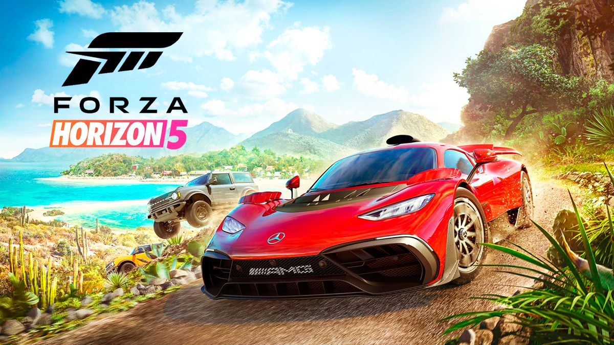

Forza Horizon was developed for the Xbox 360 and is the first open-world game in the series. It is based around a fictitious festival called the Horizon Festival, set in the U.S. state of Colorado. The game incorporates many different gameplay aspects from previous Forza Motorsport titles, like the large variety of cars, realistic physics and high definition graphics. The aim is to progress through the game by means of obtaining wristbands by driving fast, destroying property, winning races and other driving antics. Horizon features the physics of Forza Motorsport 4, which have been optimised to work on the more than 65 variants of terrain said to be present in the game. Players can drive off-road in select areas, while others are limited by guardrails or other means. Horizon allows the player to modify the car that is selected from the garage by changing numerous features both internally and externally on a car. One can also obtain cars by winning races with random drivers on the street, by winning larger competitive races, and by finding barns housing hidden treasure cars that cannot otherwise be bought through the game's "Auto-show" or through racing. The 2013 Dodge SRT Viper GTS is the cover car.The game is backwards-compatible with the Xbox One and the Xbox Series X/S.
Forza Horizon
is a 2012 racing video game developed by Playground Games and published by Microsoft Studios for the Xbox 360 on 23 October 2012. The game is the fifth instalment of the Forza series, having originally spun-off from Turn 10 Studios Forza Motorsport series.
Taking place during the fictitious Horizon Festival, a street racing event set in the state of Colorado, the aim is to progress via winning races, while also increasing the popularity level by performing stunts. Players can drive off-road in select areas while others are limited by guardrails or other means.
Forza Horizon was released to critical acclaim and has since spawned its own series, with four additional sequels to date: Forza Horizon 2 in 2014, Forza Horizon 3 in 2016, Forza Horizon 4 in 2018, and Forza Horizon 5 in 2021.
Forza Horizon 1

Forza Horizon 2
Forza Horizon 2 was developed for the Xbox 360 and Xbox One. The game is set in Southern France and Northern Italy, and the playing field is three times the map of its predecessor. The Xbox 360 version was developed by Sumo Digital,and is the final Forza game for Xbox 360. The Xbox One version introduced dynamic weather and lighting systems to the series. Both versions feature day-and-night cycles and cross-country races of up to 12 players and two "Bucket Lists", one for France and the other for Italy. Bucket Lists are lists of location-specific challenges involving certain vehicles for the player to complete, such as driving a Ford Raptor through a forest with only headlights to light the player's way. Additionally, its single-player and multiplayer modes have merged to allow for seamless connectivity, where other players can join in or drop out of the host's session without interrupting the latter's progress. In this edition of Forza Horizon, "Car Meets" serves as an online hub for players to compare their cars and share their own designs or tunes for others to use, as well as socialize and challenge each other in showdown races. The 2014 Lamborghini Huracán LP 610-4 was the cover car.
Forza Horizon 3
Forza Horizon 3 was released for Xbox One and Windows 10 on September 27, 2016.Its support for Xbox Play Anywhere makes it the first Forza title to allow cross-play on the two Microsoft platforms. The game is set in Australia, and has the player represented in the game as the host of the Horizon Festival itself. Its topography, car roster, and cast of player avatars have all diversified. For the first time, the terrain includes sand and deep bodies of water that can be driven on or into, and the car roster, which is expanded to 350 cars, encompasses off-road racing buggies and trophy trucks. The single-player campaign mode adds co-op, in which up to three players join the host to complete the latter's objectives. Progression is kept regardless of which mode campaign is played in. A new mode called Horizon Blueprint allows players to edit events by changing their routes, number thereof, and time of day and determining which cars are eligible for the events.An expansion titled Blizzard Mountain was released on December 13, 2016, featuring a snow area along with the name giving blizzard storms, eight new cars, and the 2016 Ford Focus RSRX as its cover vehicle.A second expansion themed around Hot Wheels was released on May 9, 2017. This expansion features a new area called "Thrilltopia" and adds orange and blue Hot Wheels track with loops, jumps, corkscrews, boost pads, half-pipes and more. The expansion also includes ten new cars. The Hot Wheels Twin Mill is the cover vehicle.The 2016 Lamborghini Centenario LP 770-4 and the 2017 Ford F-150 Raptor Race Truck were the cover cars.
Horza Horizon 4

Forza Horizon 4 was developed for the Xbox One and Windows 10 and released on October 2, 2018. The game is set in parts of England and Scotland, and features over 450 cars from more than one hundred manufacturers. It introduces a dynamic four-season scheme that rotates on a weekly basis and changes aspects of the environment, such as rivers drying in the summer. Places such as the Edinburgh Castle can now be purchased as property, unlocking benefits. For the first time, players are given the option to traverse the same world as others in single-player on a 72-player server. The 2018 McLaren Senna and the 1997 Land Rover Defender 90 are the cover cars.Shortly after launch, Turn 10 released a patch that added Route Creator, where players draw custom point-to-point and circuit racing routes and place their checkpoints on the map.
Forza Horizon 5
Forza Horizon 5 was developed and released for the Xbox One, Xbox Series X/S, and Windows 10 on November 9, 2021, and is set in Mexico. The seasons return, but to account for Mexico's diverse landscape, different parts of the map have their own weather that rotates seasonally. A new mode called Events Lab allows players to create races with their own rules and objectives. Also new is Forza Link, an AI assistant that tracks one's progress and preferred means of playing the game and the players they meet online. It then uses that information to match players with statistically similar interests. The Mercedes-AMG One and the 2021 Ford Bronco Badlands are the cover cars.